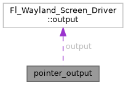

fltk
Loading...
Searching...
No Matches
Public Attributes
|
List of all members
pointer_output Struct Reference
Collaboration diagram for pointer_output:

[
legend
]
Public Attributes
Fl_Wayland_Screen_Driver::output
*
output
struct wl_list
link
The documentation for this struct was generated from the following file:
/home/ivan/Documents/INF/3D-minesweeper/thirdparty/fltk/src/drivers/Wayland/
Fl_Wayland_Screen_Driver.cxx
Generated by
1.9.8